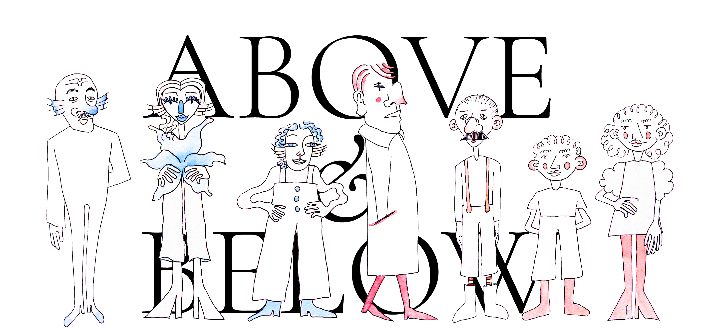

Above and Below is an interactive media narrative with the aim of raising awareness about the preservation of the oceans with a particular focus on the effects that micro plastics have on ocean life and its consequences on the human world as well.
Above and Below is set in two mirrored worlds: Aurum (Above) and Staghorn (Below) separated by a body of water. We follow the story of Poppy, a woman from Staghorn who has to find a cure for her friend, getting sick because of the toxicity present in their world. She will encounter many different characters during her mission, coming from both above and below.
You will find some external documents during the story, for which you will need to scan QR codes, so keep your phone in hand and enjoy!
START